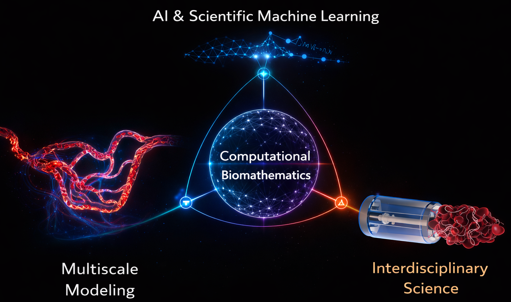

Welcome to Professor Li’s Research Group
We develop mathematically grounded and computationally efficient frameworks for multiscale biological systems, integrating applied mathematics, scientific machine learning, and computation for biomedical discovery.

